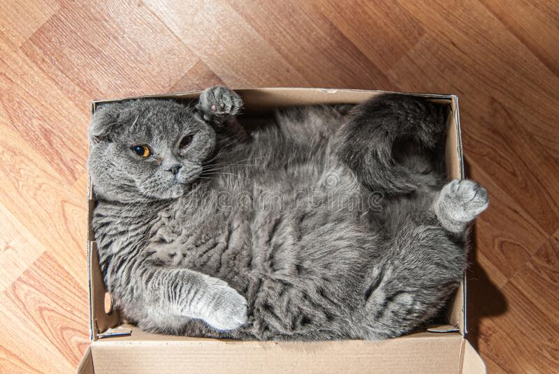

Eigenschappen
- Andere naam: geen
- Gewicht: 2.5-6 kg.
- Karakter: kalm, huiselijk, rustig en introvert
- Kleuren: Alle kleuren, nuances en patronen met zowel lang haar als kort haar.
- ongeveer levensduur: ~15 jaren
we fokken dit ras niet door de ethische problemen daarvan.

terug naar rassen